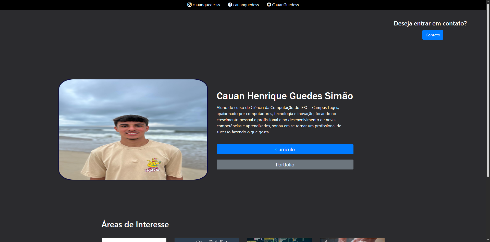

Portfólio - Cauan Henrique Guedes Simão
- Desafio de introdução ao HTML
- Site Pessoal
- Reprodução de Layouts de Sites
Este projeto foi feito em 2023, durante um curso de iniação ao Desenvolvimento Web,
onde o objetivo era colocar os simples conhecimentos obtidos em prática, criando um site em HTML
utilizando diversas
tags e estruturas inicias.
Link do repositório no GitHub: Clique aqui
Este projeto foi desenvolvido em 2025, durante o curso de bacharel em Ciências da Computação,
onde o objetivo é colocar conhecimentos obtidos durante a disciplina em prática, criando um site
responsivo em HTML, utilizando a biblioteca
Bootstrap e CSS, com diversas páginas e seções.

Link do repositório no GitHub: Clique aqui
Link do site hospedado no GitPages: Clique aqui
Este projeto foi desenvolvido em 2025, durante o curso de bacharel em Ciências da Computação,
onde o objetivo é colocar conhecimentos obtidos durante a disciplina em prática, replicando diversos
layouts de sites, com diferentes desafios e
formas de serem criados.
Link do projeto no Google Drive: Clique aqui